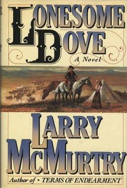
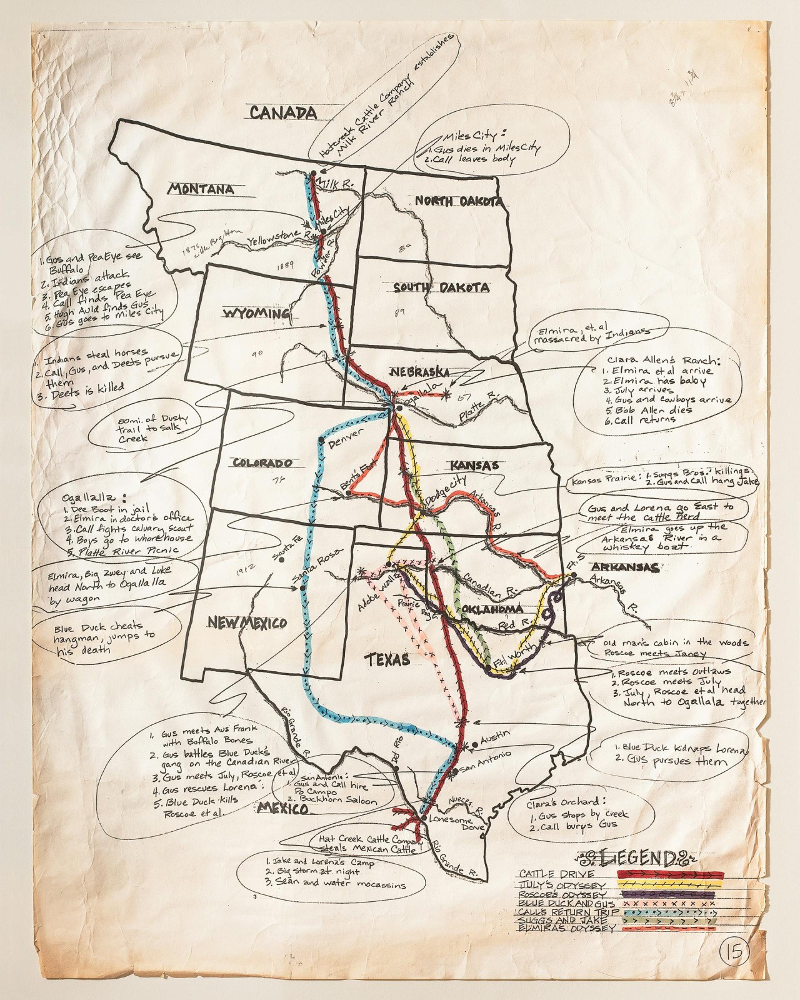

Created at: 2026-10-26

It's back in the 1870's, the American civil war is over and the Native American tribes are being pushed back to reservation land. Texas and Mexico were full of cattle and horses for the taking, and no one better for the task than the two ex Texas Rangers, Woodrow Call and Augustus McCrae. The two men are now in their 50's and to think about how they have aged is quite a bitter sweet memory for me now that I come to this 3rd book.
But nothing better for a Westerner book than a story about two cowboys driving cattle all the way from the Mexican border up to the Canadian border. The story telling and character development is just brilliant, even after I have read pretty much the two prequels which were plenty of character building themselves.
There were a lot of sad deaths in the prequels (Big Foot Wallace, Long Bill Coleman, Buffalo Hump, etc), but none as striking and sad as Gus's death. It was hard to watch that character die as it felt like Gus was the real glue that put everything together. But it did provide a lot for the plot, and I am glad that I read the prequels so that I had more time to spend with Gus.
I must say that taking to reading the Lonesome Dove series in chronological order definitely paid off. The 3rd book of the series (Lonesome Dove) is the one that won the Pulitzer Prize, but I think that there is so much depth in the prequels that I can't decide whether it was a superior work or not.
That said, I believe this book stands on its own, and I could easily just have read it and be done with it. But now that I have read Dead Man's Walk and Comanche Moon, I believe that I would be missing something out if I had not read them.
I am unsure if I will read the final book, and I am a bit down that my favourite characters are gone, but I will let the dust settle first and decide about that later. It is at least a good thing to know that I have one more book from this series to come back to in the future.
